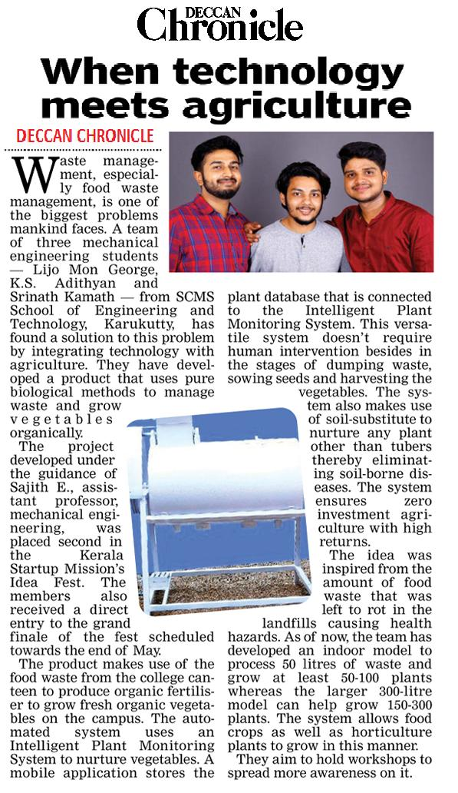

Project demo link: (https://drive.google.com/file/d/1gYDgSqO4EMlfJ4sFpSUAHvjC2CFiNY6f/view)
The product makes use of food waste to produce organic fertiliser to grow
vegetables organically. The automated system uses an Intelligent Plant
Monitoring System (IPMS) to nurture vegetables. A mobile
application stores the plant database that is connected to the IPMS which
delivers the required amount of fertiliser according to each plant
whenever required. This versatile system doesn’t require human
intervention besides in the stages of dumping waste, sowing seeds &
harvesting vegetables. System also uses a soil-substitute to nurture any
plant other than tubers.
Second prize awarded for Grovio at Calicut University Idea Fest 2019 at CMA Office Bearers Installation Ceremony, August 19, 2019.
15 May 2019 Edition.
